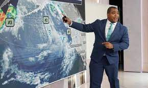

Thomas Harrington Meteorologist
A meteorologist is a professional who specializes in the study of weather patterns and atmospheric conditions.
Meteorologists use scientific knowledge and various tools, including weather instruments and computer models,
to forecast and understand weather phenomena. They provide important weather information for a wide range of purposes,
including agriculture, aviation, disaster preparedness, and everyday planning.
Personnal traits
- Meteorologists need strong analytical abilities to interpret complex data, satellite imagery, and weather models accurately.
- Weather forecasting requires a high level of attention to detail.
- A curious nature is essential in meteorology as it drives meteorologists to continuously seek knowledge and understand the intricacies of weather systems.
Physical traits
- Meteorologists can be found across different age groups, from recent graduates to experienced professionals with decades of experience in the field.
- Meteorology is an inclusive field that welcomes individuals of all genders. There are both male and female meteorologists working in various roles, including research, forecasting, and broadcasting.
- Meteorologists working in broadcast meteorology may adhere to dress codes appropriate for their on-camera appearances.
